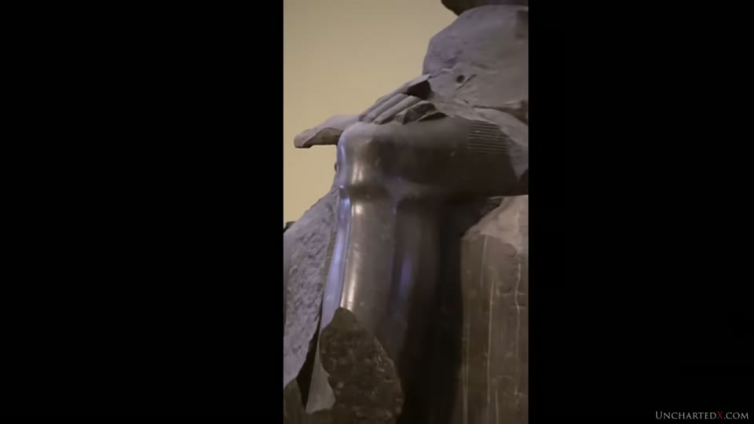
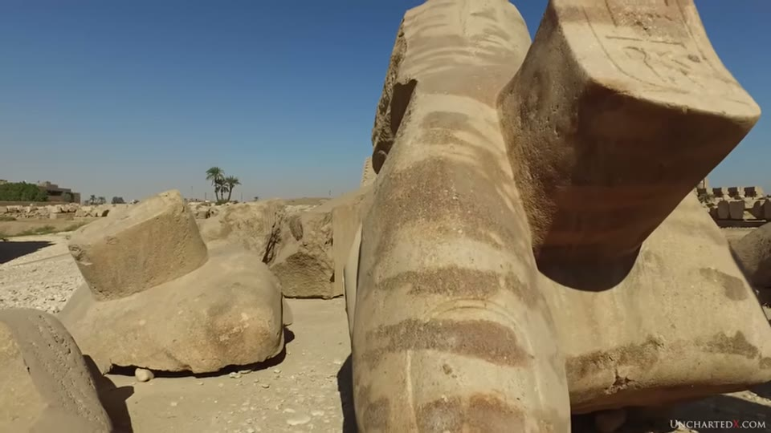
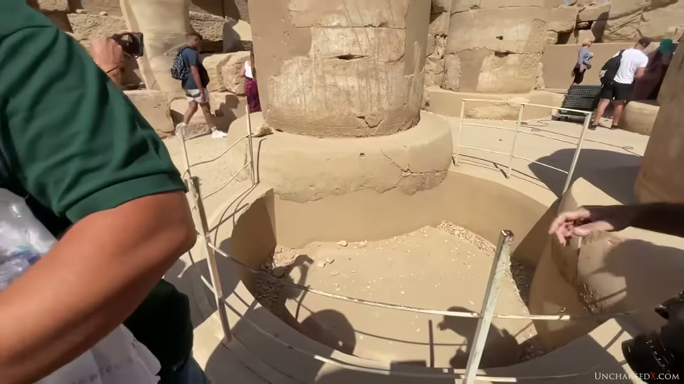
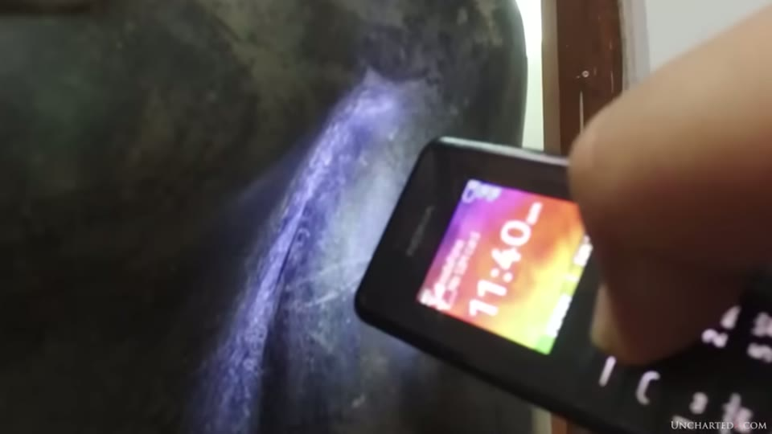

UnchartedX
Lost Ancient Technology: The Colossal Statues of Ancient Egypt
Ben · 56 min · watch on YouTube · summarised 2026-10-01
A survey rather than a single site, and the argument is comparative throughout: put two statues of the same stone side by side and ask whether the same tools made both. The thread running through it is that the writing used to date these objects does not match the objects.
Ben states the scope limit early 02:39–02:54: "obviously I'm not saying that every statue from ancient Egypt fits this mould — in fact most of them do not."
The comparison the argument is built on
03:34–06:29. Two pieces in the same museum, both granodiorite.
The first is Ramesses II as a child sheltered by a falcon, about 2.5 m tall, from Tanis. Ben calls it remarkable and beautiful and reads it as hand-tool work: surface uneven and pitted with chisel or pounding marks remaining, facial features visibly not symmetrical, the uraeus and the fingers of the left hand rough, the lower legs "hefty", and a polish that does not reflect light. He adds that the falcon's face looks to him like a modern repair, flagging it as a guess.
The second is a knee and lower leg from a much larger broken statue of the same stone. His reading: no pitting, no chisel marks, bone structure and musculature rendered, a finish still reflecting light, "without a tool mark in sight" — but hieroglyphs on the same piece still carry chisel marks and lack straight lines.


The comparison the two-industries argument is built on.
He extends the same split to other categories 07:25–11:48: single-piece precision boxes against later handmade sarcophagi; single-piece tapered granite columns against stacked sandstone drums; the predynastic hard-stone vessels against the alabaster vessels that followed, held as the vases entry; and the Giza, Dahshur and Meidum pyramids against later mudbrick ones.
The pattern he draws from it 11:06–11:36 is chronological: the work that cannot be accounted for by hand tools "always seems to come from the earliest periods". Mastaba 17 at Meidum, third dynasty, holds what is called the first single-piece granite box, and it is a 13-ton precision carving — "from zero to perfection in the deep sands of time with no precursive technological progression required at all, it seems."
And he states the objection to himself 12:02–12:29: plenty of precision boxes, statues, columns and obelisks are attributed to the Middle and New Kingdoms and to Ptolemaic times — the Serapeum boxes, held as the Serapeum entry, and the large Luxor statues among them. His answer is that those attributions come from the inscriptions, which is the claim the rest of the video is about.
The colossal ones
14:00–33:45. The stated reason for making the video is that the famous examples are not the large ones.
- The Ramesseum colossus, west bank at Luxor. Head and shoulders toppled beside the granite pedestal it stood on, pieces of the feet still on the pedestal. Estimated around 1,000 tons whole. Ben points at the surface still smooth and polished across large quartz inclusions of differing hardness, at fine detail in the headdress stripes and the ear canal, and contrasts both with the deeply chiselled glyphs cut into statue and pedestal.
- The Tanis foot, a granite foot complete with toes, later cut down and reused as a block in a wall alongside pieces of obelisks. He puts the original statue above 1,000 tons and at roughly Statue of Liberty dimensions, about 700 miles / 1,100 km from its quarry in the south.
- The Karnak hand, conglomerate quartzite with flint nodules visible in it, which he puts at possibly 1,200 tons or more by comparing its thumbnail with the Tanis toenail. The cartouche of Ramesses II is cut into the end of the object the hand holds.
- The Colossi of Memnon, quartzite, around 650 tons each, originally single pieces and reconstructed by the Romans.

The largest surviving piece, and the finish on it.

The scale of the original, and what was later done to the fragment.


The other candidate for largest, and the cartouche cut into it.
The same footage of this hand appears in another video with a different site named. In the Lahun box entry, published January 2021, a colossal hand of mixed stone is shown while the narration says "what must have been a massive statue at Tanis — you can see its thumb here." The frames are from the same shoot: the same hand at the same angle, the same palm tree at the left, the same scattered blocks, the same distant obelisk. Here, twenty months later, the narration places it at Karnak. The entry for the earlier video already recorded the location as unconfirmed by its own frame; this is where the conflict becomes visible.
Honourable mentions 31:50–33:45: the unfinished obelisk at Aswan in the 1,200-ton range, held as the unfinished obelisk entry; two unfinished blocks in a limestone quarry near Minya, one carrying the outline of a colossal standing statue, estimated from rough dimensions and regional limestone density at approximately 3,500 and 5,000 tons; and at Baalbek the trilithon at around 900 tons a block, the Stone of the Pregnant Woman at a thousand or more and a larger stone beneath and beside it at about 1,500. The Baalbek footage is credited on screen to cinematographer Mark Winden. Those sites are covered in the logistics entry.
The wall painting, examined rather than dismissed
20:45–23:35. This is the most careful section, because it takes the standard counter-evidence and reads the details off it.
The scene from the tomb of Djehutihotep, around 1880 BCE, showing a seated statue hauled on a wooden sled, is, as Ben puts it, the proof "always cited". What he says about it:
- the statue is alabaster, not granite — softer and less dense
- expert estimates put it at 58 to 65 tons
- the scene shows 172 workers, with opinion divided on whether they pull or push, and one man pouring liquid in front of the sled
- he cites a 2015 paper for the Japanese Society of Tribologists on the physics of the move
His conclusion is about scaling rather than about the scene: a depiction of 172 men moving a 58-ton alabaster statue "does nothing to explain how loads of 1,000 tons or more were moved", and the difficulty does not rise linearly — material failure, sinkage, friction. He accepts the method for what it shows: "50, 100, even 150 or perhaps 200 tons might have been possible."
The image used for it is a modern reconstruction, not the painting. What is on screen is a clean, fully coloured redrawing with the figures laid out in regular ranks, carrying two printed credits in its upper corners: "Abanoub Nasr" at the left and "Deir el-Bersha" with an organisation name at the right. The worker count, the figures' postures and the man pouring liquid are all read off this drawing. No photograph of the tomb wall appears.

The evidence always cited for moving colossal statues.
He contrasts it with the documented Russian thunderstone move — steel rails, steel ball bearings, capstans — and notes no evidence for any of those three exists in Egypt. A documented case of very large stones moved by sled and ship sits inside the range he concedes: the 108-tonne Octopus Stone at Osaka Castle, with its quarries, surviving sleds and wedge marks, is held on another channel as the Osaka megaliths entry.
A further step he raises and leaves open: the Ramesseum statue had to be lifted onto its pedestal.
The belts, and the dagger under the cartouche
33:45–40:30. The precision case is referred out to the precision entry — Christopher Dunn's work on the symmetry of the granite heads and crowns at Luxor — and the new material here is about the inscriptions.
The faces are the same. Ben's observation is that statues displaying precision also share the same features and face, across attributions spanning from the Old Kingdom Khafre to Ramesses II in the 19th Dynasty, which he reads as suggestive of a template.
The belts carry the clearest case that the writing came later. On several standing statues at Luxor, hieroglyphs have been cut over pre-existing features — a dagger shape on the belt, with the cartouche carved across it. On the camera walk-through, two adjacent statues are compared: on one the dagger sits centrally and the glyphs were placed around it; on the other the glyphs run over it. One statue is noted as carrying the names of more than one pharaoh — Ramesses II and Merenptah, his son, between the legs.

Where the writing sits relative to the carving beneath it.
And a piece at Karnak that was never rebadged is used as the control 37:48–38:31. Yousef Awyan — named in the narration — argues the dynastic Egyptians placed inscriptions deliberately, choosing focal points where the writing would sit with the object.
The older floor under the floor 39:15–40:00. In the Great Hypostyle Hall at Karnak, beneath missing floor tiles, Ben points at the base of a much older column, made of white calcite, of a type found on Old Kingdom sites and thought to have carried single-piece granite columns. His reading: the later temple was built over something already there.

What is under the floor of the hall.
An Egyptologist on camera states the dating problem plainly 40:14–40:34: "when we as Egyptologists divide the site to timelines we depend on inscriptions, but we already know that inscriptions can be added and different." The same site is covered in the Karnak and Luxor entry, which reuses the Karnak hand segment from this video a year later.
Abu Simbel, excluded
40:52–42:35. A concession, and it is unprompted. The colossal figures at Abu Simbel are carved directly out of a sandstone hillside, and Ben says he does not put them in the same category: sandstone is far softer, the figures never had to be moved, and "scaffolding, an army of artisans and time could get the job done." He adds that they do not show the same perfection of proportion and features he sees in granite statues, and that the work "seems just a little bit rough, both outside and inside the temple".
The one thing he takes from the site is a question about the 1960s relocation: if moving huge loads was straightforward, why did the modern project have to cut the temple into small blocks?
The tool marks
42:35–45:05. The signs are rare, he says, because tool marks were generally polished out. Three kinds are named: overcuts on the seats and under the armpits of statues in the Egyptian Museum, all from Old Kingdom sites; and tubular drill marks, for instance between the feet, which he reads as roughing-out.
His argument about the armpit overcuts is geometric: there are two short cuts at different angles in a space too confined for a copper bar to be worked back and forth, and an overcut of that depth would represent hours of grinding if it were made that way. The drilling and sawing evidence is held as the tube drills entry and the machining entry.

The tool mark offered as evidence against hand grinding.
The close-ups of the overcuts are lit with a mobile phone screen held up to the stone, and at this resolution the two cuts at differing angles that the argument turns on cannot be separated in the frame.
He turns the standard objection round 44:22–44:36: no copper bar or drag saw has ever been found, so "the where are the tools argument applies equally well to the orthodox explanation as much as it might to any so-called alternative proposal."
What he concludes from it
45:32–51:38. Stated as hypothesis, with the alternative laid out beside it.
His model is inheritance. A lost pre-cataclysmic civilisation; the Younger Dryas; dynastic Egypt bootstrapped from what survived. The statues, he says, have no functional purpose — unlike the boxes and bowls he argues elsewhere might — and are artistic and representational, benefiting from precision manufacturing developed in pursuit of function.
To the question "if the statues are so ancient, why do they look like dynastic Egyptians?" his answer is inversion: the dynastic civilisation modelled itself on the inherited objects. He reaches for cargo cult as the analogy, qualifies it — "far more than simply a cargo cult, they are undeniably connected to their ancestors" — and cites the king lists, Zep Tepi and the Shemsu Hor, for a timeline of some 35,000 years.
The alternative, stated fairly 50:39–51:26: if the hypothesis is wrong and dynastic Egypt did all of it, then they had a superior technology running alongside primitive tools at the same time, and much more knowledge of the dimensions of the planet and the motions of the heavens than is credited. He notes there is no direct evidence for that either — "only the architecture left standing, the tool marks left behind, the precision objects themselves."
What you can check yourself
- The side-by-side comparison is the whole method, and the objects are in public museums. Two granodiorite pieces, one pitted and asymmetric and one not, can be photographed and compared by any visitor.
- The Djehutihotep scene is published and widely reproduced. The material of the statue, the count of 172 figures, and the man pouring liquid are all checkable against the painting itself.
- The Tanis foot's reuse as a wall block is visible in place, as is the distance from the southern quarries on any map.
- The belts at Luxor. Whether a cartouche has been cut across a pre-existing dagger shape is a question a photograph answers, and several statues are available to check.
- The calcite column base at Karnak is under missing floor tiles in the Hypostyle Hall and is visible to visitors.
- The armpit and seat overcuts are on statues in the Egyptian Museum and can be examined.
- The absence of tools. That no copper bar or drag saw has been excavated is a claim about the published record and can be tested against it.
- The Minya blocks are in a limestone quarry and the outline on one of them is photographable, though the tonnages are calculated rather than measured.
What the video does not settle
- Not one figure in it is measured. Every tonnage — 650, 900, 1,000, 1,200, 1,500, 3,500, 5,000 — is an estimate, and most are given without a source. The 1,200-ton figure for the Karnak statue is explicitly Ben's own extrapolation from comparing a thumbnail to a toenail.
- The two-industries reading is made by eye. Pitting, symmetry, polish and proportion are assessed visually on camera; no surface measurement, profile or scan is applied to any statue in this video, and the comparisons are between objects of different sizes and states of preservation.
- That the inscriptions came later is an inference from their quality, not from any dating of the cut surfaces. No weathering study, patination comparison or other physical test of the glyphs against the carving is offered.
- Usurpation is documented; wholesale inheritance is not. That pharaohs recarved their names on older monuments is, as he says, accepted. The step from that to the statues predating the dynastic period entirely is the hypothesis, and the video names no object independently dated earlier than its inscription.
- The falcon repair is flagged as a guess by Ben himself.
- The scaling argument is asserted, not modelled. That difficulty rises logarithmically or exponentially with mass is stated without a calculation, and the 150–200 ton ceiling he grants is not derived from anything shown.
- The sled scene is analysed from a redrawing. The worker count, the direction of pull and the liquid-pourer are read off a modern coloured reconstruction credited to Abanoub Nasr, not off a photograph of the tomb wall at Deir el-Bersha. What the original preserves, and how much of the drawing is restoration, is not addressed.
- The Egyptologist who states the dating problem is not named. The remark that Egyptologists depend on inscriptions that can be added later is spoken over site and museum footage, and no caption identifies the speaker or their institution.
- The same footage carries two different site names across the channel. The colossal hand is Karnak here and Tanis in the January 2021 video. The video does not note the change, and nothing in either frame settles which is right.
- The overcut close-ups are lit by a phone screen and the geometry the argument depends on — two short cuts at differing angles — is not resolvable in them.
- The tribology paper is cited loosely. The author's name is mangled in the automatic transcript and no title appears on screen, so what the paper concludes is reported second-hand.
- The "same face" claim has no measurement behind it here. It is referred out to Dunn's work rather than demonstrated, and no two faces are overlaid or compared dimensionally in this video.
- The template idea is offered as suggestion — "to me it's suggestive of" — and no mechanism, pattern-book or repeated dimension is proposed for it.
- The Minya tonnages rest on rough dimensions and an average density, which Ben says.
- Zep Tepi and the Shemsu Hor are religious king-list material, used here as a timeline without discussion of what kind of document they are.
- Abu Simbel is excluded on criteria the video sets itself — softness, no transport, rougher finish — and the same criteria are not applied systematically to the pieces that are included.